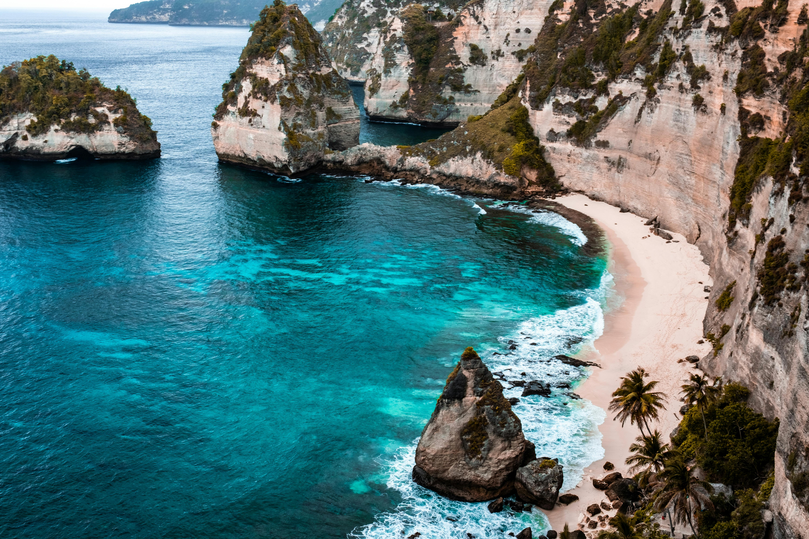
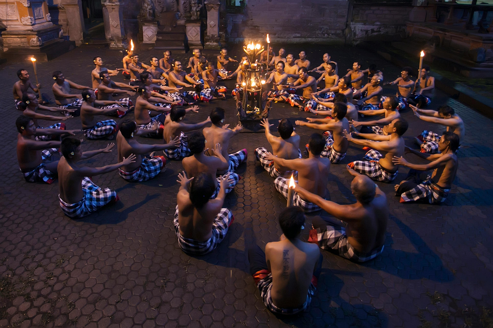

Jelajahi Bali

Keindahan Alam
Bali menawarkan panorama alam yang memukau, dari pantai yang bersih hingga pegunungan yang asri. Tempat-tempat wisata alam populer termasuk Pantai Kuta, Danau Batur, dan hutan tropis di Ubud.

Budaya dan Seni
Bali dikenal dengan kebudayaan yang kaya, seperti seni tari, musik, dan ukiran. Tari Kecak dan Barong adalah dua pertunjukan yang wajib disaksikan. Desa Ubud juga terkenal dengan galeri seninya.
Aktivitas Wisata
Dari berselancar di Pantai Kuta hingga hiking di Gunung Batur, Bali menawarkan banyak aktivitas menarik. Wisatawan juga dapat menikmati spa tradisional dan kuliner khas Bali seperti babi guling dan sate lilit.